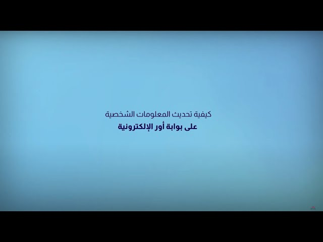

انقر لإعادة الصوت
فتح تطبيق
للتقديم على الخدمة من خلال الرابط التالي:
https://ur.gov.iq/inde...
....................................................... تُعدّ بوابة أور الإلكترونية النافذة الموثوقة للوصول إلى الخدمات الحكومية في العراق، حيث نُقدّم حلولاً مبتكرة ومعلومات دقيقة لتسهيل الإجراءات والمعاملات الرسمية، مع رصدٍ مستمرٍّ لكافة المستجدّات في مجال الخدمات الإلكترونية.
https://ur.gov.iq
....................................................... لمتابعتنا على منصات التواصل الاجتماعي: فيسبوك
/ urportaliq
انستجرام
/ urportal
منصة X
https://x.com/ur_gov_iq
تيك توك
/ urportal
تليجرام
https://t.me/urportaliq
واتساب
https://www.whatsapp.c...
#التحول_الرقمي
#دائرة_مركز_البيانات_الوطني
#خليك_جزء_من_أور
طريقة التقديم على خدمة فتح بيان شخصي
562 مشاهدة · قبل 5 أشهر
#خليك_جزء_من_أور
#التحول_الرقمي
#دائرة_مركز_البيانات_الوطني
...المزيد
بوابة أور الإلكترونية للخدمات الحكومية
4.22 ألف
اشتراك
8
مشاركة
حفظ
إبلاغ
التعليقات
3
إضافة تعليق...
10:00
هروب بلا وداع.. رحلة "مفزعة" عاشها الأسد من القصر إلى الطائرة
AlArabiya العربية
•
1 مليون مشاهدة
5:01
عاشرا- استلام المواطن لسند العقار المرسل من دائرة التسجيل العقاري
Iraqigov
•
1.7 ألف مشاهدة

1:21
طريقة تحديث المعلومات الشخصية في الحساب الشخصي عبر بوابة أور الإلكترونية
بوابة أور الإلكترونية للخدمات الحكومية
•
551 مشاهدة
10:28
عمار مظهر التميمي | مدير دائرة مركز البيانات الوطني
قناة العراقية الإخبارية HD
•
1.2 ألف مشاهدة
طريقة التقديم على خدمة فتح بيان شخصي - YouTube
![]()